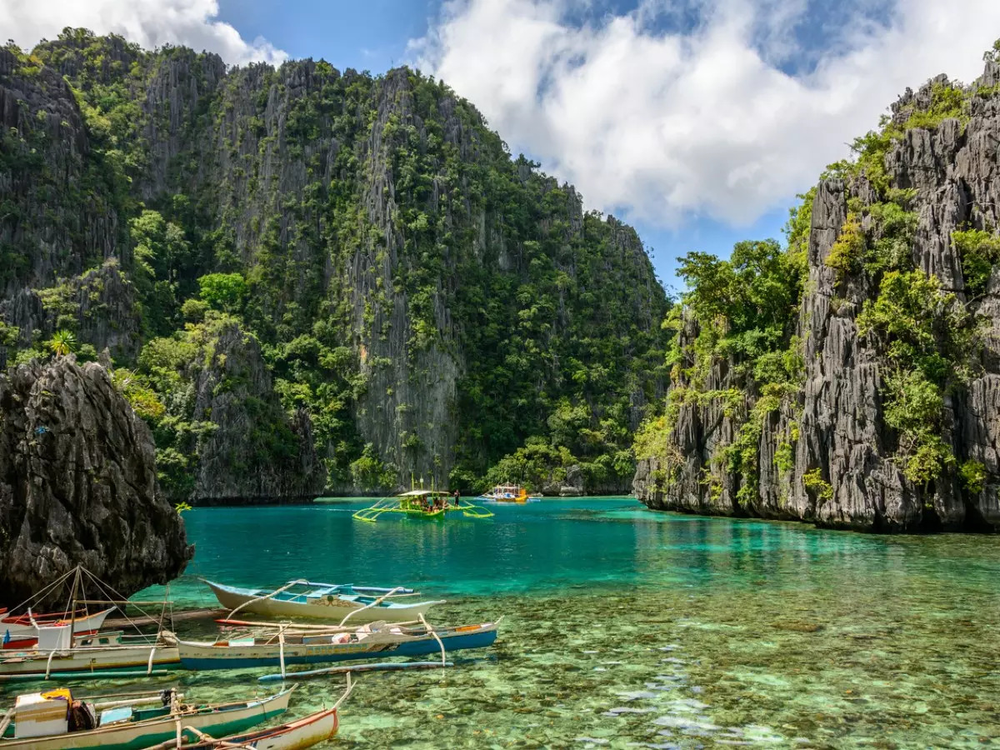
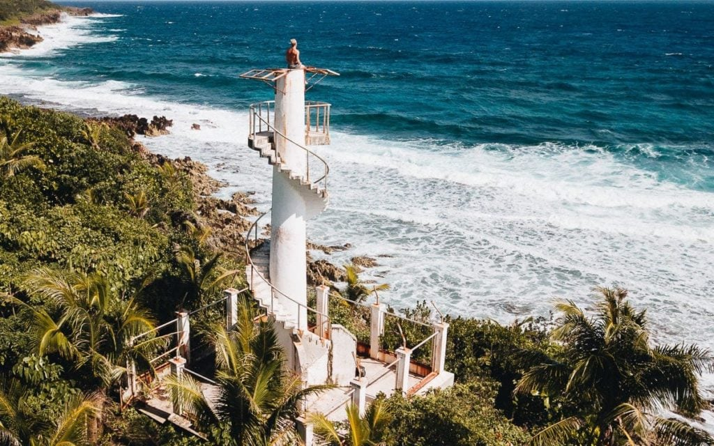
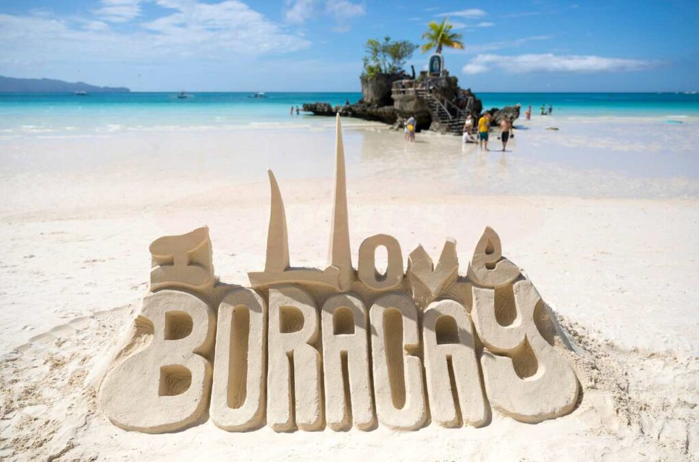

PalawanPalawan is a tropical paradise in the western part of the Philippines, making it a popular destination for tourists worldwide. However, with so many best places to visit in Palawan, Philippines, it can be overwhelming to plan your itinerary.

SiargaoSiargao is a famous tourist destination, well-known for its many surfing spots and featured in the film Siargao for such qualities. Surfing is so ingrained in the identity of Siargao, that in 2022, two political families from Surigao Del Norte traded barbs over the cancellation of a national surfing competition hosted on the island.

BoracayBoracay was originally inhabited by the Panay Bukidnon and Ati people, but commercial development has led to their severe marginalization since the 1970s. Boracay island from space apart from its white sand beaches, Boracay is also famous for being one of the world's top destinations for relaxation. As of 2013, it was emerging among the top destinations for tranquility and nightlife.
 Alona Beach
Alona Beach
The Alona beach is a popular public beach located at the south-west tip of Panglao Island, Bohol in the Philippines. The beach is situated less than two miles from the Bohol-Panglao International Airport It is known for its white sand, rocky cliffs, and commercial facilities that line the 1 kilometre stretch of beach.